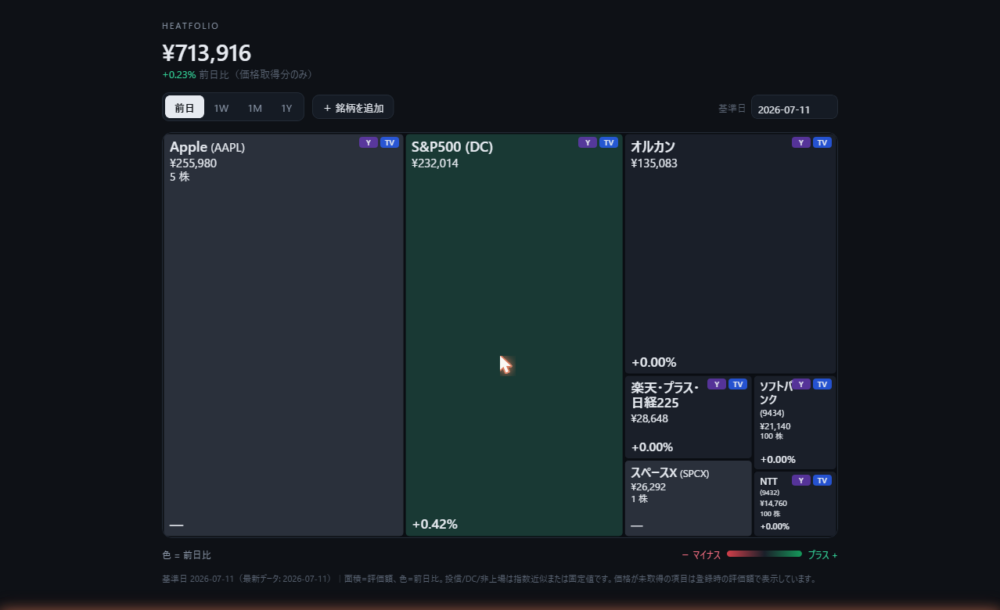

証券口座 API 連携型ダッシュボードの信頼コストと、Excel での俯瞰しにくさ。その中間を狙って作った単一 HTML の自作資産ダッシュボード heatfolio の設計思想と、面白いと思っている実装ポイント 5 つ（価格取得の一点集約、原子置換保存、VBS でノーウィンドウ日次バッチ、Tailscale serve、USD/JPY 始値換算）をまとめた記事です。マネーフォワードで実際に起きた情報流出のインシデントから、そもそも家計データを他社に預ける前提を選び直すかどうか、という話も書きました。
「口座連携なし」と「treemap で全体を俯瞰する」の両方を諦めない中間解として作った、単一 HTML の自作ダッシュボードの記録です。数量だけ手入力しておけば、価格は Yahoo chart API で日次に自動取得される。保有データは PC ローカルの JSON、閲覧はローカル or Tailscale 越しに tailnet 内から。ソースはこちら: github.com/ishizakahiroshi/heatfolio。